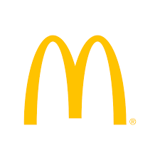

The Impossible burger is a plant based substitute for meat products.
We can see in the graph that our customers chose to switch to the healthier option.
We experience a 16.5% drop in sales, the highest in the last three years.
We can see a slight improvement in sales after October, but we must roll out the McPossible Burger to compete with Burger King!
In the chart below, we can see that all regions faced the same trend.
We faced the biggest drop in sales in the South-West.
If we were to release the McPossible Burger, we should first pilot it in the South-West, since they seem to be the most health conscious.
The Impossible burger is a direct substitute for beef.
Given that almost 60% of our sales are from Hamburgers, we must adapt to the Impossible burger.
We will be able to open up to a whole new market of Vegetarian customers.
The average sales in October is due to the effect of the Impossible Burger.
Generally January and March are our worst months.
People make New Years resolutions to eat better and move away from hamburgers.
By releasing the McPossible Burger January 2020, we can help our customers with their New Years resolutions.
Our Fish-Filet Burgers tend to sell well on Fridays.
The sales continue to drop through the weekend until Tuesdays.
The reason for this is that pescatarians don't have any other alternatives at McDonalds.
We can provide deals on the McPossible Burger over the weekend to compensate for the drop in sales of the Fish Burger.
FINAL VERDICT
Time to develop the recipe for the McPossible Burger.
18% of greenhouse emissions are due to the meat industry.
It is time that McDonalds paid greater importance to saving our planet.
Not to forget the long term health of our customers